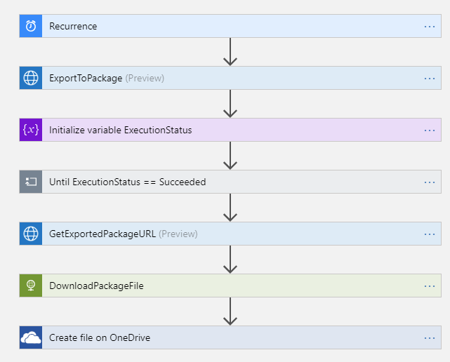
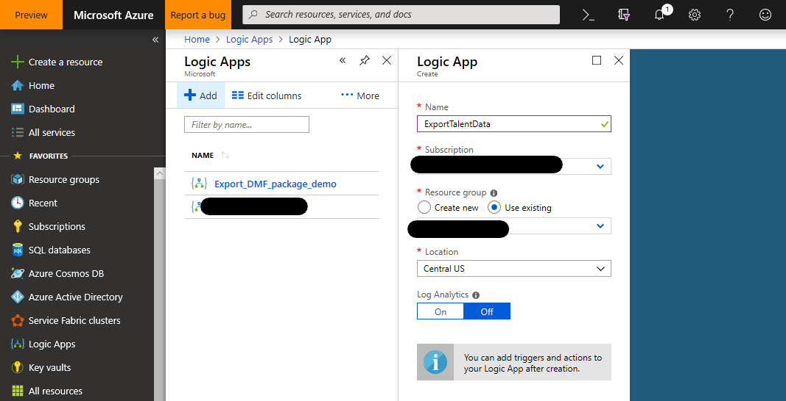
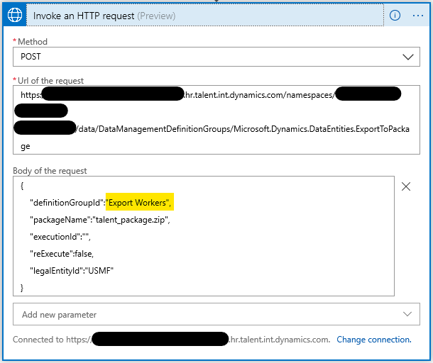
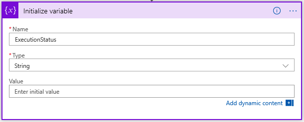
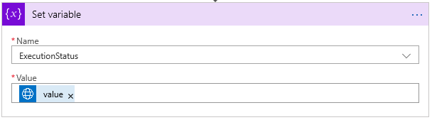

App für wiederkehrenden Datenexport erstellen
Dieser Artikel zeigt das Erstellen einer Microsoft Azure Logic App, die regelmäßig nach einem Zeitplan Daten aus Microsoft Dynamics 365 Human Resources exportiert. Das Tutorial nutzt die Vorteile der REST-Anwendungsprogrammierschnittstelle (API) des Human Resources-DMF-Pakets, um die Daten zu exportieren. Nachdem die Daten exportiert wurden, speichert die Logic App das exportierte Datenpaket in einem Microsoft OneDrive for Business-Ordner.
Geschäftsszenario
In einem typischen Geschäftsszenario für Microsoft Dynamics 365-Integrationen müssen Daten regelmäßig nach einem festen Zeitplan in ein nachgeschaltetes System exportiert werden. Dieses Tutorial zeigt, wie Sie alle Arbeitskraft-Datensätze von Microsoft Dynamics 365 Human Resources exportieren und die Liste der Arbeitskräfte in einem OneDrive for Business-Ordner speichern.
Tip
Die spezifischen Daten, die in diesem Tutorial exportiert werden, sowie das Ziel der exportierten Daten sind nur Beispiele. Sie können sie einfach ändern und an Ihre Unternehmensanforderungen anpassen.
Verwendete Technologien
In diesem Tutorial werden die folgenden Technologien verwendet:
Dynamics 365 Human Resources- Die Stammdatenquelle für die zu exportierenden Arbeitskräfte.
Azure Logic Apps – Die Technologie zur Orchestrierung und Planung des wiederkehrenden Exports.
Connector – Die Technologie, mit der die Logic App mit den erforderlichen Endpunkten verbunden wird.
- HTTP mit Azure AD-Connector
- OneDrive for Business-Connector
DMF-Paket REST-API – Die Technologie, die zum Auslösen des Exports und zum Überwachen des Fortschritts verwendet wird.
OneDrive for Business – Das Ziel für die exportierten Arbeitskräfte.
Voraussetzungen
Bevor Sie mit der Übung in diesem Tutorial beginnen, muss Folgendes gegeben sein:
- Eine Human Resources-Umgebung, die über Berechtigungen auf Administratorebene in der Umgebung verfügt
- Ein Azure-Abonnement, um die Logic App zu hosten
Übung
Am Ende dieser Übung steht Ihnen eine Logic App zur Verfügung, die mit Ihrer Human Resources-Umgebung und Ihrem OneDrive for Business-Konto verbunden ist. Die Logic App exportiert ein Datenpaket aus Human Resources. Warten Sie, bis der Export abgeschlossen ist. Laden Sie das exportierte Datenpaket herunter und speichern Sie das Datenpaket im OneDrive for Business-Ordner, den Sie angegeben haben.
Die fertige Logic App ähnelt der folgenden Abbildung.

Schritt 1: Erstellen eines Datenexportprojekts in Human Resources
Erstellen Sie in Human Resources ein Datenexportprojekt, das Arbeitskräfte exportiert. Nennen Sie das Projekt Export Workers und stellen Sie sicher, dass die Option Datenpaket generieren auf Ja gesetzt ist. Fügen Sie eine einzelne Entität (Arbeitskraft) zum Projekt hinzu und wählen Sie das Format aus, in das exportiert werden soll. (Microsoft Excel-Format wird in diesem Tutorial verwendet.)

Important
Merken Sie sich den Namen des Datenexportprojekts. Sie benötigen ihn, wenn Sie im nächsten Schritt die Logic App erstellen.
Schritt 2: Erstellen der Logic App
Der Großteil der Übung besteht darin, die Logic App zu erstellen.
Erstellen Sie im Azure-Portal eine Logic App.

Beginnen Sie im Logic Apps Designer mit einer leeren Logic App.
Fügen Sie einen Auslöser für einen Serienzeitplan hinzu, um die Logic App alle 24 Stunden (oder nach einem Zeitplan Ihrer Wahl) auszuführen.

Rufen Sie die ExportToPackage DMF-REST-API zum Planen des Exports Ihres Datenpakets auf.
Verwenden Sie die Aktion für HTTP-Anfrage aufrufen über den HTTP mit Azure AD-Connector auf.
- Basisressourcen-URL: Die URL Ihrer Human Resources-Umgebung (keine Pfad-/Namespace-Informationen einschließen.)
- Azure AD Ressourcen-URI:
http://hr.talent.dynamics.com
Note
Der Human Resources-Dienst stellt noch keinen Connector bereit, der alle APIs verfügbar macht, aus denen die REST-API des DMF-Pakets besteht, beispielsweise ExportToPackage. Stattdessen müssen Sie die APIs mithilfe von rohen HTTPS-Anforderungen über den HTTP mit Azure AD-Connector aufrufen. Dieser Connector verwendet Azure Active Directory (Azure AD) zur Authentifizierung und Autorisierung gegenüber Human Resources.
Melden Sie sich in der Human Resources-Umgebung über HTTP mit Azure AD-Connector an.
Richten Sie eine HTTP-POST-Anforderungen ein, um die ExportToPackage-DMF-REST-API aufzurufen.
Methode: POST
URL der Anforderung: https://<hostname>/namespaces/<namespace_guid>/data/DataManagementDefinitionGroups/Microsoft.Dynamics.DataEntities.ExportToPackage
Text der Anforderung:
{ "definitionGroupId":"Export Workers", "packageName":"talent_package.zip", "executionId":"", "reExecute":false, "legalEntityId":"USMF" }

Tip
Möglicherweise möchten Sie die einzelnen Schritte umbenennen, damit deren Bedeutung klarer wird als der Standardname HTTP-Anforderung aufrufen. Sie können diesen Schritt beispielsweise umbenennen in ExportToPackage.
Initialisieren Sie eine Variable, um den Ausführungsstatus der ExportToPackage-Anforderung zu speichern.

Warten Sie, bis der Ausführungsstatus des Datenexports Erfolgreich ist.
Fügen Sie eine Bis-Schleife hinzu, die wiederholt wird, bis der Wert der ExecutionStatus-Variable Erfolgreich lautet.
Fügen Sie eine Verzögern-Aktion hinzu, durch die fünf Sekunden gewartet wird, bevor der aktuelle Ausführungsstatus des Exports abgefragt wird.
Note
Setzen Sie den Grenzwert auf 15, damit maximal 75 Sekunden gewartet wird (15 Iterationen × 5 Sekunden), bis der Export abgeschlossen ist. Wenn Ihr Export länger dauert, passen Sie den Grenzwert entsprechend an.
Fügen Sie eine HTTP-Anforderung aufrufen-Aktion zum Aufrufen der GetExecutionSummaryStatus-DMF-REST-API hinzu und setzen Sie die ExecutionStatus-Variable auf das Ergebnis der GetExecutionSummaryStatus-Antwort.
Dieses Beispiel führt keine Fehlerprüfung durch. Die GetExecutionSummaryStatus-API kann nicht erfolgreiche Terminalzustände zurückgeben (also andere Zustände als Erfolgreich). Weitere Informationen finden Sie in der API-Dokumentation.
Methode: POST
URL der Anforderung: https://<hostname>/namespaces/<namespace_guid>/data/DataManagementDefinitionGroups/Microsoft.Dynamics.DataEntities.GetExecutionSummaryStatus
Hauptteil der Anforderung: body('Invoke_an_HTTP_request')?['value']
Note
Möglicherweise müssen Sie den Hauptteil der Anforderung-Wert in der Codeansicht oder im Funktionseditor im Designer eingeben.


Important
Der Wert für die Variable festlegen-Aktion (body('Invoke_an_HTTP_request_2')?['value']) unterscheidet sich vom Wert für den HTTP-Anforderung aufrufen 2-Hauptteilwert, auch wenn der Designer die Werte auf gleiche Weise anzeigt.
Erhalten Sie die Download-URL für das exportierte Paket.
Fügen Sie eine HTTP-Anforderung aufrufen-Aktion hinzu, um die GetExportedPackageUrl-DMF-REST-API aufzurufen.
- Methode: POST
- URL der Anforderung: https://<hostname>/namespaces/<namespace_guid>/data/DataManagementDefinitionGroups/Microsoft.Dynamics.DataEntities.GetExportedPackageUrl
- Hauptteil der Anforderung: {"executionId": body('GetExportedPackageURL')?['value']}

Laden Sie das exportierte Paket herunter.
Fügen Sie eine HTTP-GET-Anforderung (eine integrierte HTTP-Connector-Aktion) hinzu, um das Paket von der URL herunterzuladen, die im vorherigen Schritt zurückgegeben wurde.
Methode: GET
URI: body('Invoke_an_HTTP_request_3').value
Note
Möglicherweise müssen Sie den URI-Wert in der Codeansicht oder im Funktionseditor im Designer eingeben.

Note
Diese Anforderung erfordert keine zusätzliche Authentifizierung, da die URL, die die GetExportedPackageUrl-API zurückgibt, ein Token für gemeinsame Zugriffssignaturen enthält, mit dem der Zugriff zum Herunterladen der Datei gewährt wird.
Speichern Sie das heruntergeladene Paket mit dem OneDrive for Business-Connector.
Fügen Sie eine OneDrive for Business Datei erstellen-Aktion hinzu.
Stellen Sie eine Verbindung zu Ihrem OneDrive for Business-Konto her, wenn erforderlich.
- Ordnerpfad: Ein Ordner Ihrer Wahl
- Dateiname: worker_package.zip
- Dateiinhalt: Der Hauptteil aus dem vorherigen Schritt (dynamischer Inhalt)

Schritt 3: Testen der Logic App
Um Ihre Logic App zu testen, wählen Sie im Designer Ausführen aus. Sie werden sehen, dass die Schritte der Logic App ausgeführt werden. Nach 30 bis 40 Sekunden sollte die Logic App-Ausführung beendet sein und Ihr OneDrive for Business-Ordner sollte eine neue Paketdatei enthalten, die die exportierten Arbeitskräfte enthält.
Wenn für einen Schritt ein Fehler gemeldet wird, wählen Sie den fehlgeschlagenen Schritt im Designer aus und überprüfen Sie die Felder Eingaben und Ausgaben für diesen. Debuggen Sie und passen Sie den Schritt nach Bedarf an, um die Fehler zu beheben.
Die folgende Abbildung zeigt, wie der Logic Apps Designer aussieht, wenn alle Schritte der Logic App erfolgreich ausgeführt wurden.

Summe
In diesem Tutorial haben Sie gelernt, wie Sie mit einer Logic App Daten aus Human Resources exportieren und die exportierten Daten in einem OneDrive for Business-Ordner speichern. Sie können die Schritte dieses Tutorials nach Bedarf an Ihre geschäftlichen Anforderungen anpassen.